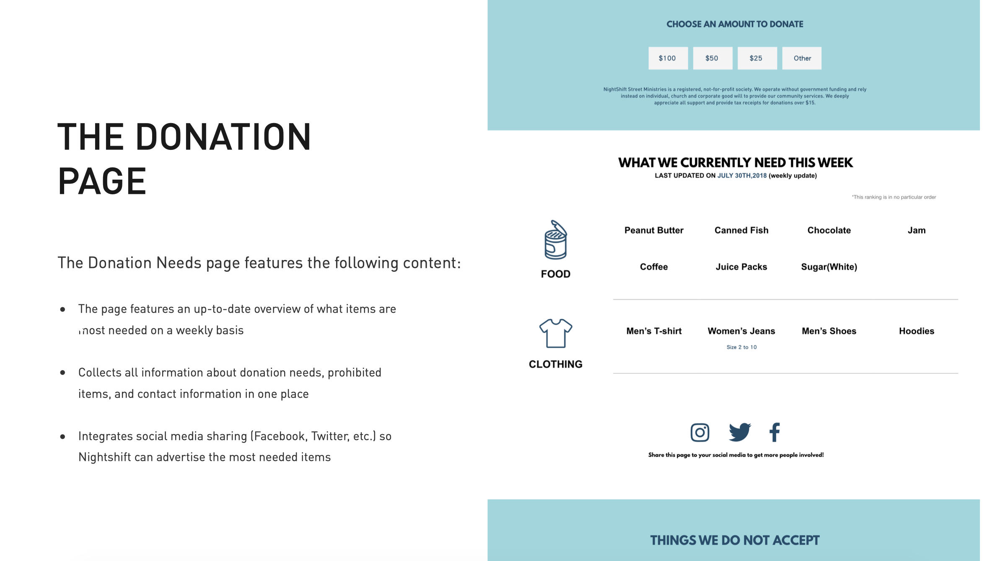

Figure 1 - About Nightshift
Figure 2 - The Solution
Figure 3 - The Inventory Checklist
Figure 4 - Volunteer & Donation Needs Page
Figure 5 - The Donation Page
During a UX design course called IAT 333 - Interaction Design Methods, students were assigned to examines concepts of design practice and related design methods for interaction designers. Design methods include ethnography, personas, design games, role-playing, scenarios, participatory workshops, and prototyping.
Since every student teams will work with a real-world client throughout the course of the entire semester. Our "client" is called Nightshift Street Ministries. Nightshift Street Ministries is a not-for-profit charity serving in Surrey. It provides outreach, care and recovery programs for people in poverty, addiction, mental illness, and homelessness. It also offers a change of clothes, blankets and personal care kits on any given night to people in need.
Our team had four members, their names are Bianca, Annie, Ella and me, and we formed into a team at the beginning of that semester so we can start to work with our client and find their "problems" as soon as possible, more importantly, be able to provide solid solutions for them to solve those problems.
For the first two weeks, our job was to find one client who can allow us to find their problems. We struggled at the beginning since there’re too many options. After some discussions, we set our goal to those non-for-profit organizations, because we want to help those organizations to help more people in need. Then we found the Nightshift Street Ministries, after few calls, we went to that organization to meet their manager in person with some questions we prepared. My job was to come up with more questions and take photos of that organization in order to find some potential problems they might not aware, for example, when people try to donate food, if the front desk is empty and there’s no call bell on that desk, they might just leave and never come again. So I basically took photos of everywhere, inside and outside, in order for us to find their problems..
After that, every week we need to provide some problems and solutions, and our professor will judge our work. For example, there’s one week that we need to state 2 problems and to create 2 relatively “solid” solutions for those problems. And one of our ideas was to create a volunteer & donation needs page (Figure 4) because after we investigate that organization, we found out that the donation they received was not balanced, for instance, they might have 100+ blankets and 3 jackets. That’s why we want to give donors a way to see what the organization really need the most at that time, and also provide information about which time slots are still looking for volunteers. My job was to create this concept page and provide ideas to solve this problem.
From this course, I learned the way to work with your teammates, since there are so many things we need to do in a short period of time, so it’s essential to work together and come up different aspects of questions and solutions. Since it’s so group-based, my main job was focusing on the graphic designs, providing opinions and suggestions, and create a donation needs “website” as our final solution for their problems. (Figure 5). It's my first UX design course, and it's not easy to work with the real-world client, but it’s definitely an unforgettable experience for me to know about UX design and I can use this experience in my future UX design.